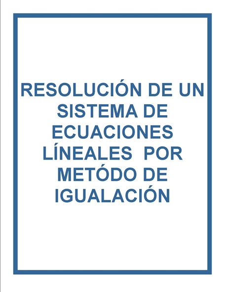
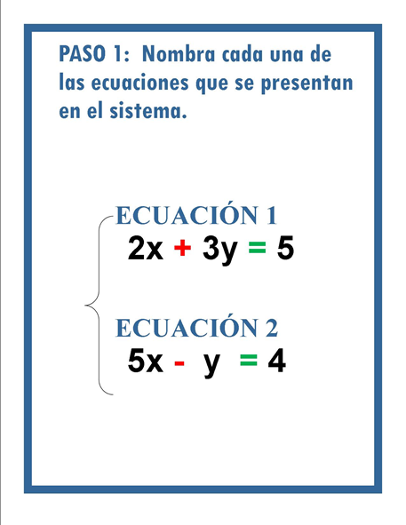
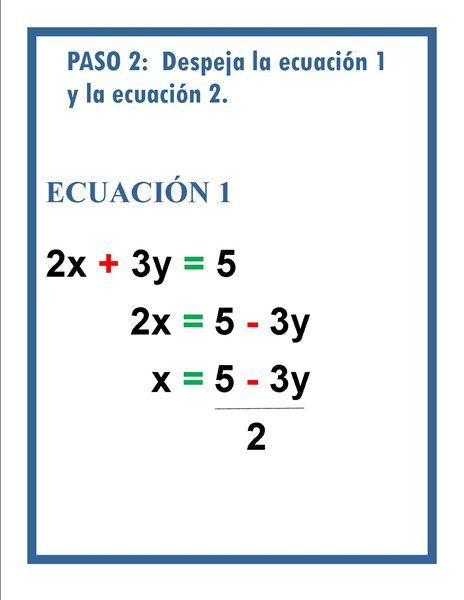
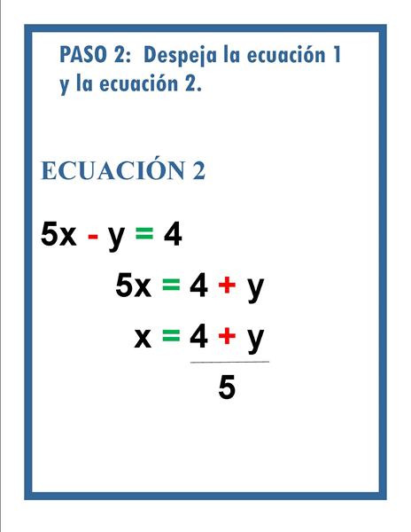
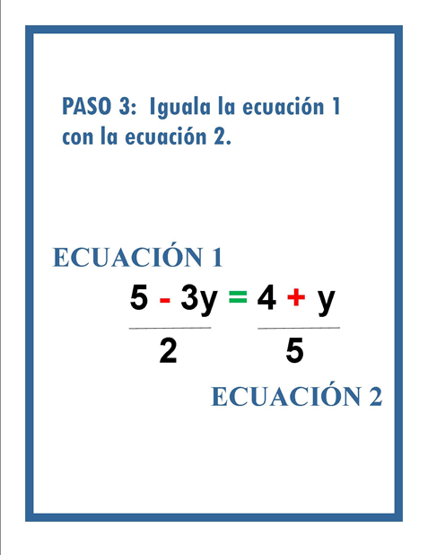
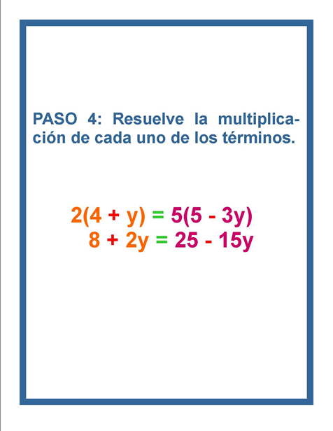
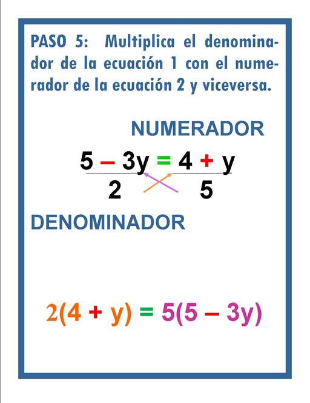
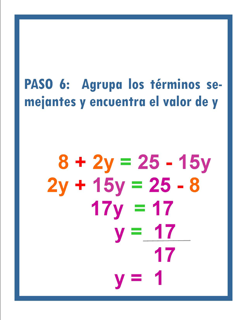
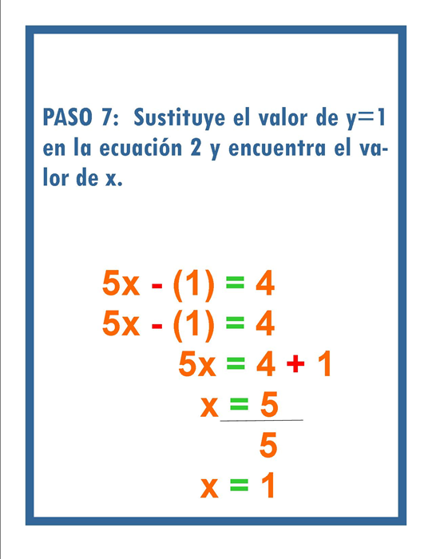

Transcripción del vídeo.
Hola, ¿cómo estás? El día de hoy veremos la unidad 5, método de igualación.
Espero te encuentres bien, el día de hoy vamos a revisar por este método cómo se resuelve el sistema de ecuaciones.
Quiero decirte que hay diferentes métodos para llegar a la solución pero el que nos interesa es el de igualación.
¿Por qué se llama de igualación? Es porque vamos a despejar ambas ecuaciones y las vamos a igualar. Vamos a ir paso a paso entonces... ¡BIENVENIDO!
Antes de comenzar quiero que recuerdes el conocimiento que viste en las unidades anteriores; revisamos despeje, regla de signos, propiedades, con la finalidad de que logremos fluir en el procedimiento. Si tienes dudas, hazlas en comentarios.
Para esto, quiero que me respondas una pregunta ¿qué quiero hacer, qué quiero obtener, a dónde quiero llegar?
Después de reflexionar y pensar esta pregunta llegamos a la conclusión de que siempre se necesita saber que vamos a despejar “x” y “y”, es el fin de nuestro sistema, que vamos a llegar a esa solución.
Entonces, vamos a hacer el paso 1. Lo importante es el orden, vamos a poner nombre a nuestras ecuaciones, esta será: ecu 1 y ecu 2.
Vamos a despejar una variable de cada ecuación, es más factible y más cómodo despejar “x”.
A continuación lo demostraré aquí: ecuación 1: 2x es igual a 5, recordemos que está sumando y pasa restando del otro lado, 3y. Estos dos están multiplicando, por lo tanto pasa dividiendo. Aquí tenemos el primer despeje, ¿te das cuenta que el objetivo fue dejar sola a la “x”? por lo tanto el valor de “x” es este.
Ahora vamos a hacer el paso 2: vamos a despejar la variable “x” en ecuación 2. Tenemos 5x= 4+y, posteriormente x=4+y/5 y lo expresamos de esta manera.
Sigue el paso número 3: las variables despejadas las vamos a igualar. Lo pondré de esta manera: 5-3y/2= 4+y/5, simplemente las igualamos.
Llegamos al paso 4: y quiero que reflexiones, ¿qué es lo que sigue?, efectivamente, lo que estás pensando es, ¡es eso! vamos a multiplicar cruzado. 5-3y/2= 4+y/5, el denominador va a multiplicar al número de arriba y lo mismo pasa del otro lado, queda de esta manera 2(4+y)= 5(5-3y).
El paso 5: donde tenemos que resolver. Lo dejaré expresado de este lado: = 8+2y=25-15y.
En el paso 6 lo que falta es agrupar… todo esto es para sacar el valor de nuestra incógnita, que es “y”, letras de un lado, números del otro 2y+15y=25-8, recordemos las propiedades que vimos en unidades anteriores. Lo que procede es hacer las operaciones: 2y+5y= 17y=25-8=17, quedaría y=17/17= 1
Ahora estamos en el paso 7: es sencillo porque ya tenemos una de las variables, ahora se tiene que sustituir el valor de “y” en algunas de las ecuaciones, quiero que observes que en esta ecuación la “y” no tiene coeficiente, por lo tanto, es más fácil sustituir este valor aquí. Observa: 5x- (1)=4 y procedemos a resolver: 5x-1=4, 5x=4+1, 5x=5, por lo tanto x=5/5 y que esto nos da 1. Y se cumplió nuestro objetivo, valor de “y” y “x”.
Concluimos el método de igualación.
Si gustas comprobar los resultados, puedes sustituirlos en cualquiera de las ecuaciones y verás que el resultado será el mismo.
Por hoy es lo último que hacemos, es el fin de nuestro curso, esperamos que te hayas sentido cómodo, agradecemos tu presencia y que hayas organizado tu tiempo. Muchas felicidades has concluido.
¡GRACIAS!
Recurso de apoyo (Secuencia de imágenes sobre la resolución de un sistema de ecuaciones por el método de igualación):
|  |  |  |
|  |  |  |
|  |  |  |
Actividad 1: Relación de columnas
Instrucciones:
1- Haz clic en el recuadro que indica la actividad 1.
2- Descarga el documento
3- Imprime el documento
4- Relaciona los pasos con su respectivo procedimiento.
5- Únelos con una línea, según corresponda.
6- Escanea la actividad ya contestada.
7- Guarda tu documento como el siguiente ejemplo MaríaCastro_unidad5actividad1.pdf
8- Envía tu actividad al siguiente correo cursoalgebra@hotmail.com
Actividad 2: Ejercicios
Instrucciones:
1- Haz clic en el recuadro que indica la actividad 2.
2- Descarga el documento
3- Imprime el documento
4- 4. Resuelve los siguientes sistemas de ecuaciones mediante el método de igualación.
5- Escanea la actividad ya contestada.
6- Guarda tu documento como el siguiente ejemplo MaríaCastro_unidad5actividad2.pdf
7- Envía tu actividad al siguiente correo cursoalgebra@hotmail.com
Refencias bibliográficas:
Si gustas, para mayor información te sugerimos consultar la referencias bibliográficas que te presentamos a continuación:
• Baldor A, (1945), Álgebra de Baldor, Grupo Editorial Patria, México.
• Mendoza Gómez, M. R., (2011), Propiedades de las igualdades y despeje de fórmulas, Hidalgo. Recuperado de: https://www.uaeh.edu.mx/docencia/P_Presentaciones/prepa1/matematicas_propiedad_de_las_igualdades_y
_despeje_de_formulas.pdf
• Peterson, J. C., (2001), Matemáticas básicas, álgebra, trigonometría y geometría analítica , Continental, México.
• Santalo M, Carbonell V, (2011), Cálculo diferencial e integral, grupo editorial éxodo, México.